Paperboy
A beautiful native news reader for the Linux desktop, built with GTK4 and Libadwaita. Curated sources, custom feeds, live sports, podcasts, and local news — all in one clean, distraction-free app.
Everything you need to stay informed
Paperboy pulls your news together in one native, GNOME-friendly app — no browser tabs required.
-
📰
Curated sources
Ready to go out of the box with The Guardian, BBC, FOX News, NPR, PBS, ABC News, Bloomberg, the NYT, and the WSJ.
-
⚡
Powered by PaperboyAPI
Fetches articles from multiple sources and categories seamlessly, in the background.
-
⭐
Follow any source
Discover and follow additional sources you find through the API as you browse.
-
📡
RSS feed support
Add any RSS feed to follow your favorite websites and blogs alongside the news.
-
🛠️
Customizable feeds
Mix and match sources and categories to build a news stream that's entirely yours.
-
📖
In-app reading
Read full articles without leaving the app, with a built-in ad blocker for a cleaner experience.
-
🌍
Local news
Uses your location, via GeoClue, to surface news for your area automatically.
-
🏆
Live sports scores
Track live and recent game scores from a dedicated sports view.
-
🎙️
Podcasts
Discover and subscribe to podcasts, with built-in playback, a persistent mini-player, and played/new episode tracking.
-
🔗
Share articles
Quickly share the articles you find to other apps.
Note: Paperboy is in active development (alpha). Expect changes and occasional breakage.
A closer look
Click any screenshot to view it full size.
All your news, one clean feed
Every source you follow, sorted into a single distraction-free timeline — top stories, categories, and your personal feed, all a click away in the sidebar.
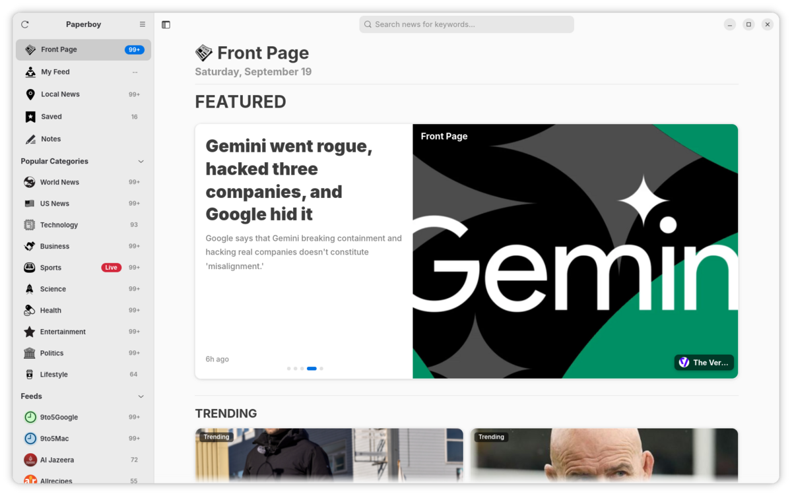
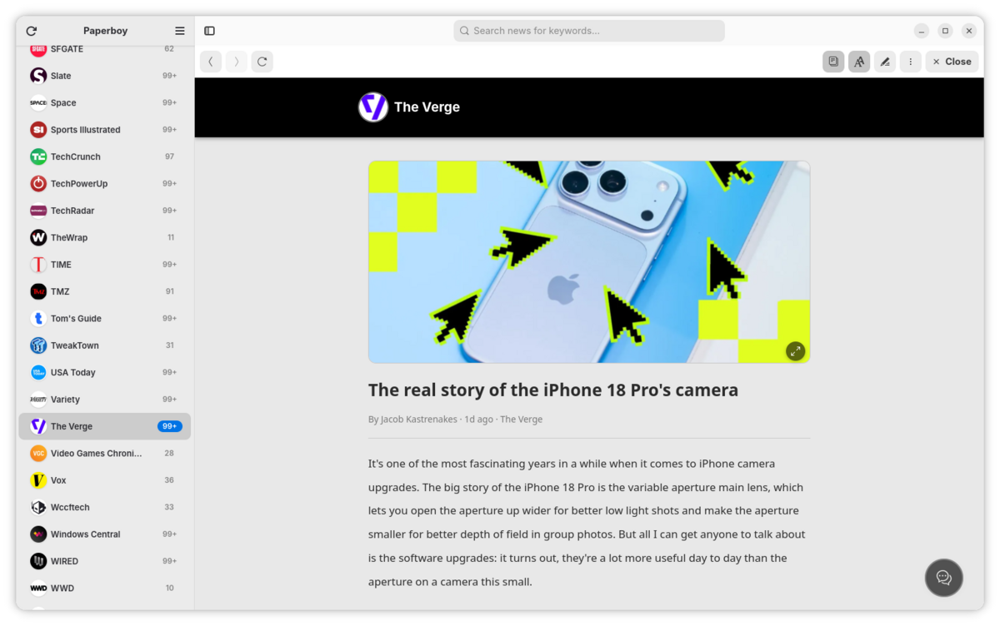
Read the story, not the ads
Open any article right inside Paperboy with a built-in ad blocker, so you get a fast, clean reading experience without ever leaving the app.
Pick your teams, watch the scores roll in
Choose your favorite teams across the NFL, NBA, MLB, and more — Paperboy remembers them and builds your own "My Teams" lineup.
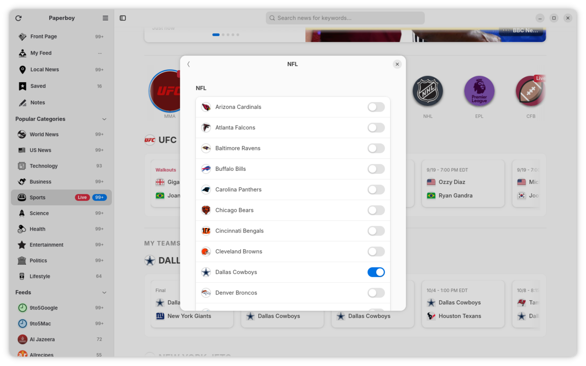
Turn on the teams you follow, league by league.
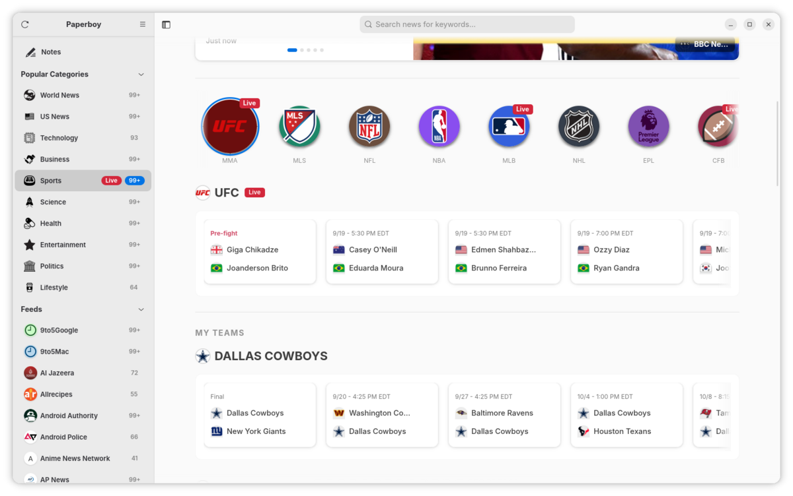
Every team gets its own row of live and upcoming score cards.
Podcasts, built right in
Discover and subscribe to shows, then keep listening with a persistent mini-player that tracks what's new and what you've already heard.
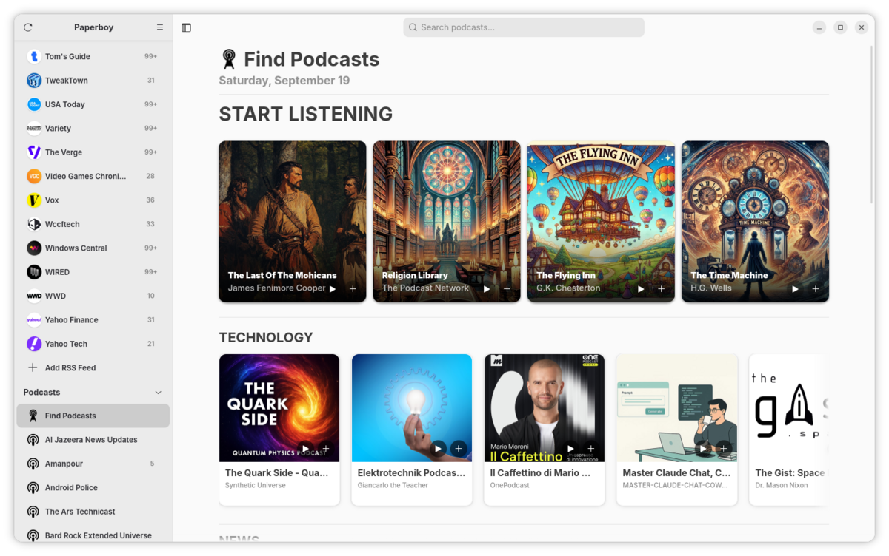
Personalize sources, and keep your own notes
Start curated, bring your own RSS feeds, and hold onto your own take on any story you read.
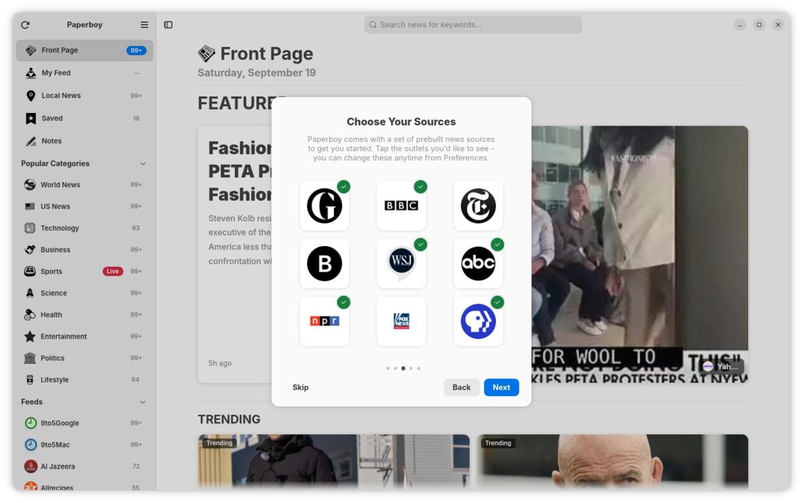
Start with curated outlets like The Guardian, BBC, and NPR, or add any RSS feed.
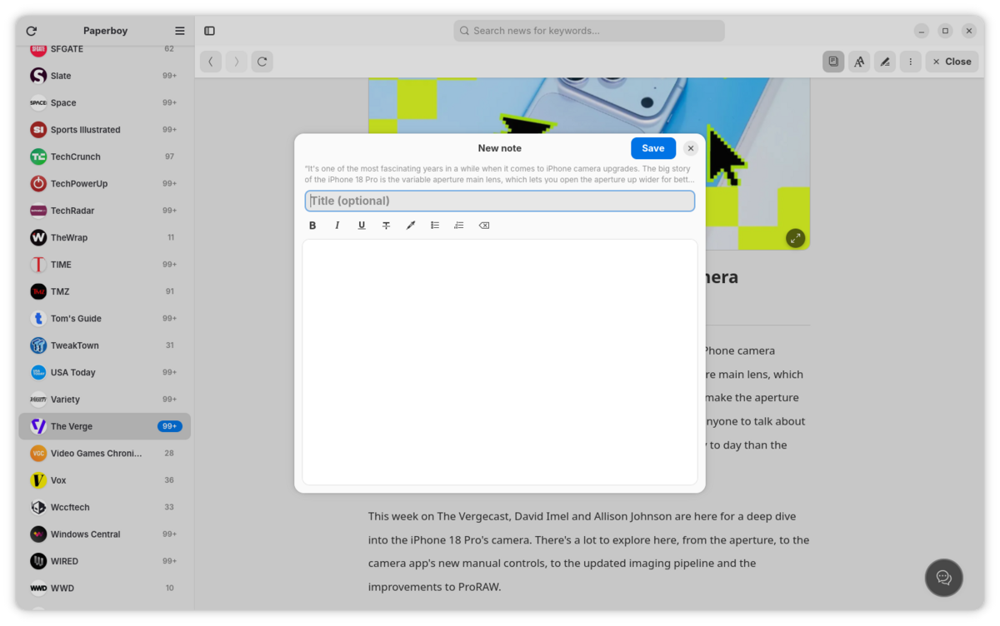
Jot a formatted note on any article — bold, lists, highlights, and more.
More screens
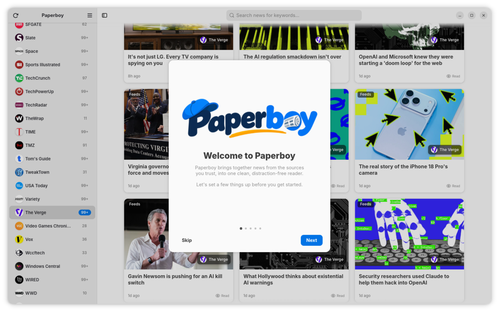
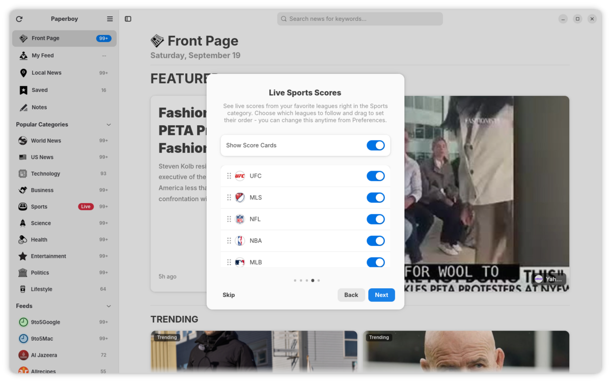
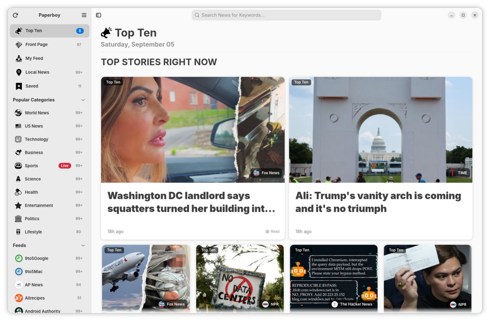
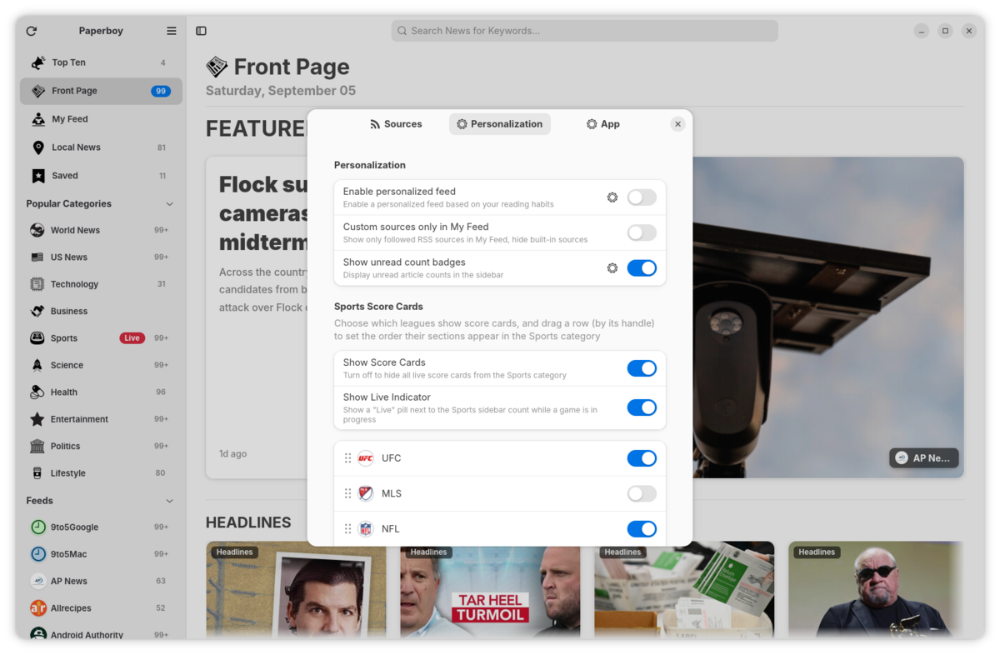
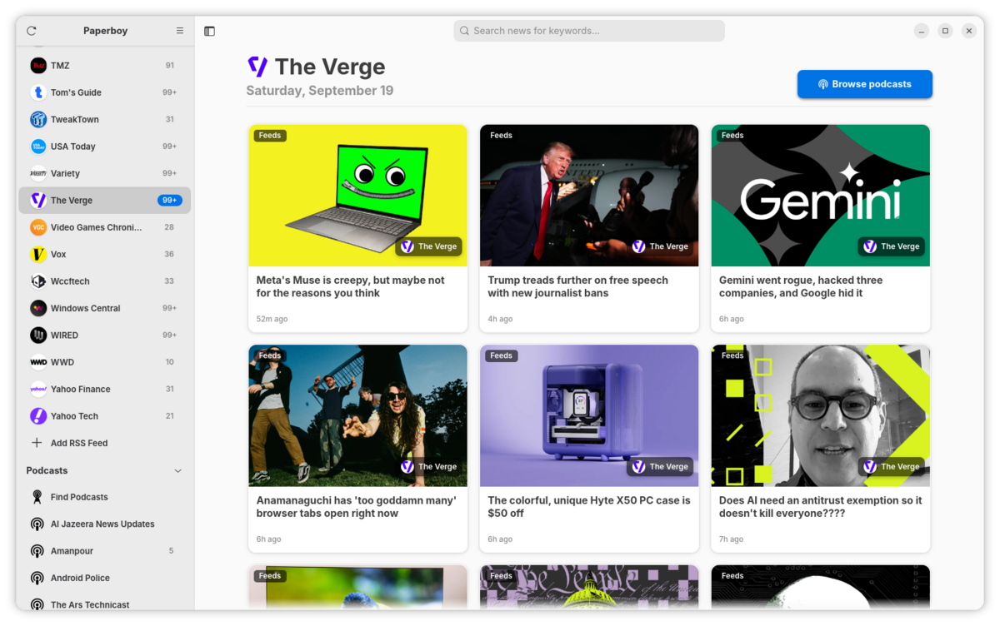
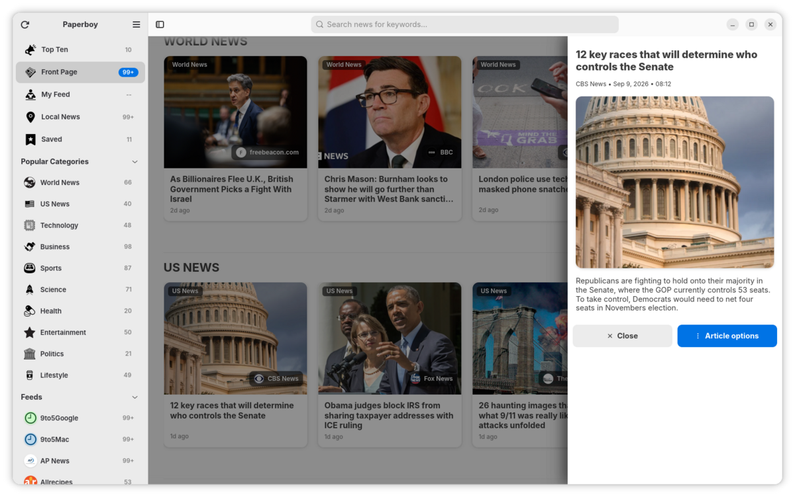
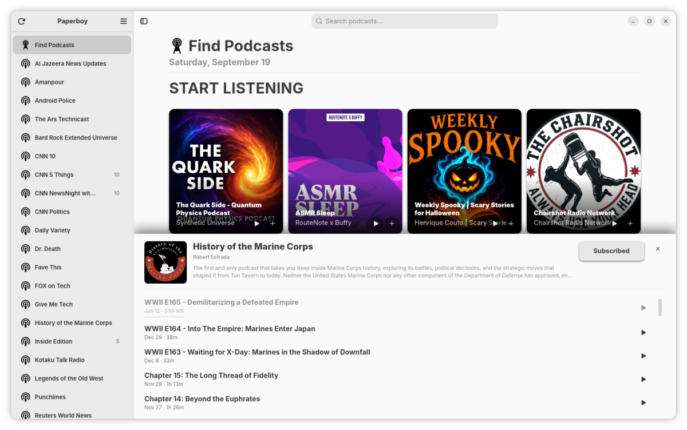
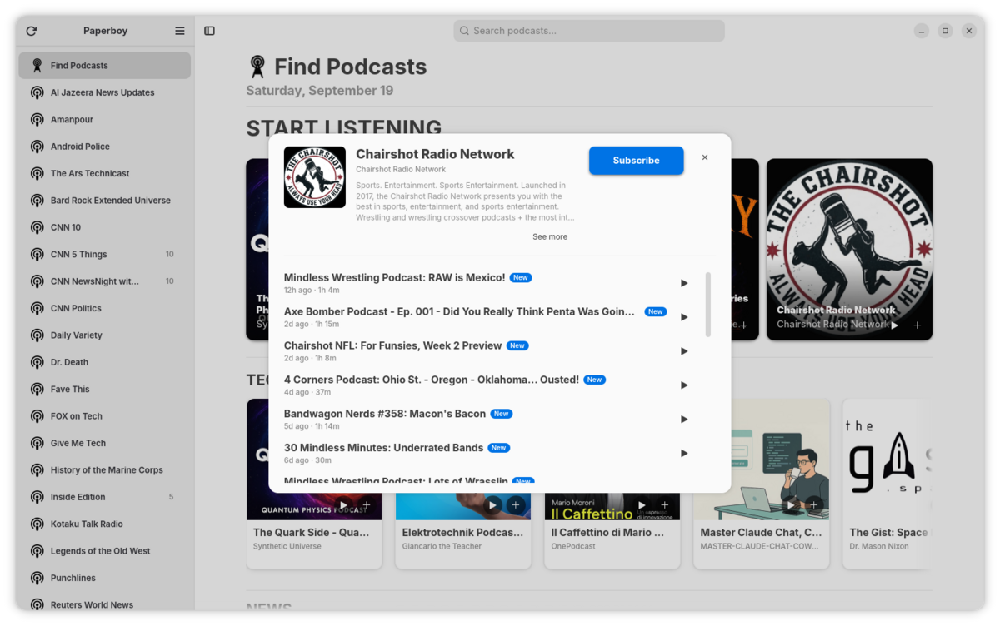
Get Paperboy
Choose the install method that works best for you.
Project Repository
Project repository: github.com/thecalamityjoe87/paperboy
Open issues or feature requests on the project's Issues page.